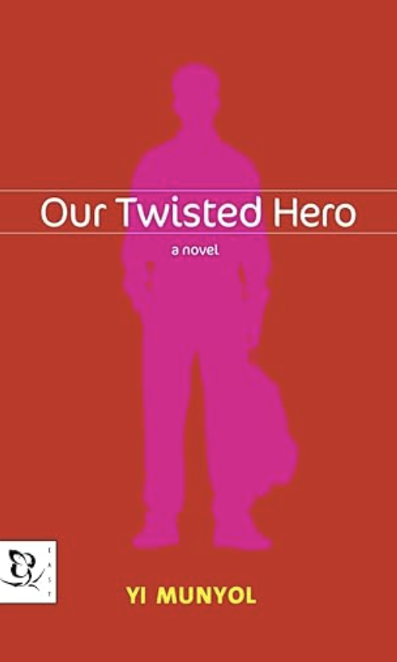

Our Twisted Hero
Genre: Psychological Fiction, Political Allegory, Coming-of-Age
Author: Yi Munyol
Description:
A tale of power, conformity, and resistance, following a young boy’s battle against a class bully that mirrors the authoritarian dynamics of society.
Overview:
Our Twisted Hero tells the story of 12-year-old Han Pyongtae, who moves from Seoul to a small-town school where he encounters Om Sokdae, the charismatic yet oppressive class monitor. As Han resists Sokdae’s rule, he becomes isolated and bullied, forcing him to confront the dynamics of power and submission. Written in 1987, this novel serves as a powerful allegory of authoritarianism, exploring themes of justice, conformity, and moral compromise through the microcosm of a classroom.